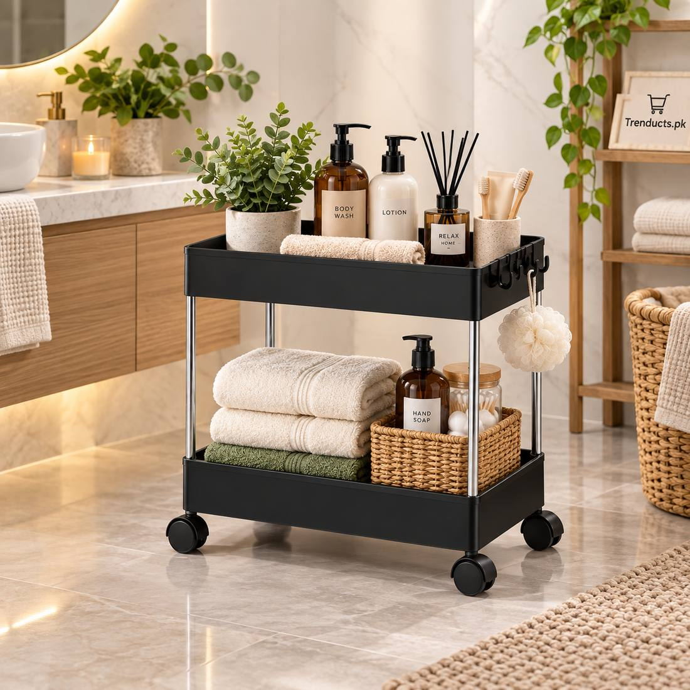
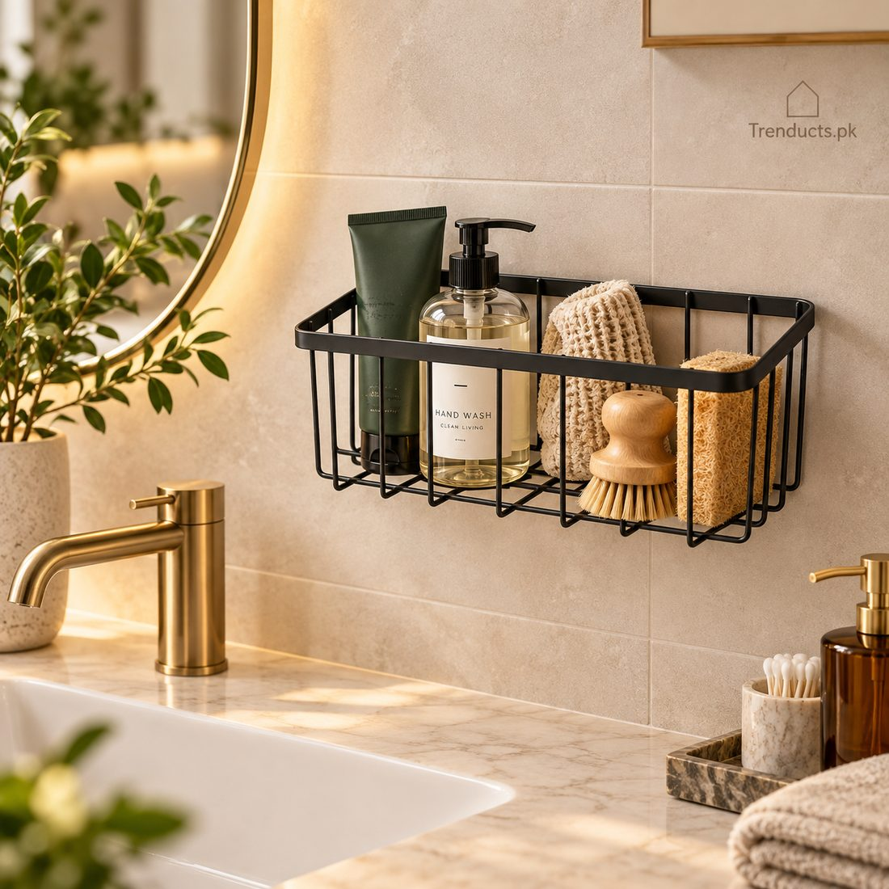

Every year, thousands of students leave home for universities in Lahore, Islamabad, Karachi, Peshawar and Faisalabad. Some move into university hostels, others share a flat with friends near campus. It is an exciting step, but the first weeks can be tough. The room is small, the cupboard is tiny, and suddenly you are responsible for your own food, laundry and study space. Ammi's checklist usually includes enough food for a month; this one focuses on the everyday essentials that make living in a small space easier.
Start with the basics
Before buying anything, find out what the hostel or flat already provides. Most hostels give a bed, mattress, small table and a cupboard. You will usually need:
- Bedsheets, a pillow, and a blanket or razai for winter
- A bucket, mug and slippers for shared bathrooms
- A towel, toiletries and a small toiletry bag to carry to the bathroom
- A lock for your cupboard and a few spare keys
Pack light at first. You can buy small items later once you know what is missing.
Make the most of a small room
Hostel rooms are often shared by two or three students, so space is precious. Vertical storage is your friend. A slim rolling cart beside the bed holds books, snacks and toiletries and can be moved when cleaning. Wall-mounted baskets keep chargers, keys and small items off the desk. Over-the-door hooks hold bags and jackets. Use the space under the bed for suitcases filled with off-season clothes.
A proper study setup
Many students study on the bed, which is bad for the back and for concentration. Even on a small table, you can make a good study corner. A folding laptop stand raises the screen to eye level and reduces neck strain during long assignments. It also lets air flow under the laptop, which helps in hot weather. Add a desk lamp for late nights, because hostel tube lights are rarely bright enough, and an extension board, since there are never enough sockets.

Food and drinks
Hostel food is not always great, and mess timings do not match exam schedules. Keep a small stock of biscuits, rusks, dry fruits, instant noodles and tea bags in airtight containers to keep ants away. An electric kettle, if allowed, is a lifesaver for chai and instant meals. Carry a good water bottle to classes; campus water coolers are convenient but your own bottle is more hygienic.
Laundry and cleaning
In a hostel, laundry is your job now. Keep a small laundry bag or basket so dirty clothes do not pile up on the chair. Carry detergent, a few clothes pegs and hangers. A small broom, dustpan and a cloth for wiping the table keep a shared room pleasant. Agree on a cleaning routine with your roommates from the first week to avoid arguments later.
Staying healthy and safe
Keep a small first aid pouch with painkillers, ORS, antiseptic cream, bandages and any regular medicines. Save emergency numbers and the hostel warden's contact. Keep valuables like laptops locked when you are out, and never leave your phone charging unattended in common areas.

Budgeting for essentials
Students on a tight budget should prioritise items that are used every day: bedding, a lamp, storage, a water bottle and a laptop stand. Decorative items can wait. Shopping online helps compare prices and avoids carrying heavy bags across the city on public transport.
Making it feel like home
A few photos from home, a small plant, or a cushion in your favourite colour make a hostel room feel less temporary. Keep it simple and tidy; a calm room helps you focus during exams.
Sharing a flat with friends
If you are renting a flat with classmates, agree early on how bills, groceries and chores will be split. A shared notebook or a simple WhatsApp group for expenses avoids awkward conversations at the end of the month. Decide who buys gas cylinders, who handles the internet bill, and how the kitchen will be kept clean. Small shared items like a rolling cart for the kitchen or a common shoe rack keep the flat from turning into a mess within weeks.
Where to shop
Laptop stands, rolling carts, wall baskets and other student-friendly items are part of Trenducts' everyday essentials, delivered to hostels and flats across Pakistan. Settle in, set up your corner, and focus on the reason you came: your studies.